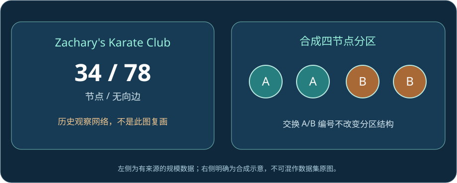

KARATE CLUB / COLLABORATION / ETHICAL SAMPLING
把 34 节点 Karate Club 历史网络、合著投影和平台关注数据放在同一套审计框架中，明确社区标签置换不变性、权重与数据偏差。
1. 社交关系的“边”，在每个案例中是什么意思？
社交网络分析的节点通常指个人或账户，但边可以表示观察到的互动、好友、关注、共同署名或消息转发。相同图统计值的社会含义可能完全不同：共同署名是协作关系，关注是单向关系，短时间内互动密集不等于长期稳定的社会纽带。若先把这些都转换成无向简单图再说“所有真实社交网络都有相同规律”，结论将因建图语义不一致而失效。
本页采用两个有明确出处的数据对象：历史的 Zachary Karate Club（真实来源）、Stanford SNAP ca-GrQc 合著网络（公开研究资源）。第三种“平台关注”只以合成有向小图讨论，不假装下载或运行微博私有数据，也不借平台规模臆造个人信息。
| 网络 | 节点定义 | 边语义 | 分析前须确认 |
|---|---|---|---|
| Karate Club | 1970 年代俱乐部成员 | 采集的线下互动关系 | 历史观察与权重来源 |
| ca-GrQc | 论文作者 | 至少合作一篇论文 | 合著窗与作者重名/投影口径 |
| 平台关注（合成） | 账户 | 用户 A 关注账户 B | 方向、机器人、缺失与隐私 |
| 评论回复（合成） | 回复者/被回复者 | 按时间发生的互动事件 | 多重事件与话题上下文 |
2. 经典 Karate Club：34 节点、78 条边意味着什么？
Zachary（1977）研究了一个大学空手道俱乐部在冲突后分裂的关系网络。广泛使用的简单无向图版本包含34 个节点、78 条边；NetworkX 的 karate_club_graph 以 0–33 编号，原文通常按 1–34 编号，引用原文个体身份时必须小心编号相差 1。边有权重，反映不同互动语境的计数或强度；忽略这些权重后，某些算法的目标函数会改变。
历史分裂主要涉及教练和俱乐部管理员两个阵营。G.nodes[v]["club"] 包含该教材数据集的阵营标签，它是用于比较的观察标签，不是算法推断出的真值因果机制。Girvan–Newman、Louvain、模块度最大化或谱聚类可以产生不同分区，社区数甚至可能不是两类；模块度最高本身也不是历史分裂预测准确率最高的充分条件。

做可复现分析时先运行 nx.karate_club_graph() 并断言节点/边数；再比较至少一种社团算法与 club 标签。要固定 NetworkX 版本与算法参数、声明是否使用边权、报告社区数及多随机种子情况。若使用模块度 Q，需给出它对应的随机零模型与分辨率限制，不把 Q 的绝对值误认作准确率。
3. 分区标签可以整体交换，准确率不能按原始名字直接算
考虑四名合成成员，历史阵营为 A,A,B,B。一个算法可能输出 B,B,A,A：这只是把两个社区的编号完全对调，结构分区与真实标签其实完全相同；但若直接逐个比较字符串，准确率居然是 0。这说明社团比较不能拿未经匹配的类标签直接计算分类准确率。可以先用匈牙利算法做最佳标签置换再算匹配率，或者使用 ARI、NMI 等对重标号不变的分区指标。
ARI 的随机调整、NMI 的归一化、类数不同时的行为也不同；不能说它们是任何图上都完全一致的“社团质量”。它们衡量分区与参考标签之间的相似程度，而非分裂的历史原因。实际角色关系可能重叠，强迫每个人恰属一类会损失信息。
交互实验：社区编号互换的陷阱
真实标签 A A B B，算法标签 A A B B；这是四节点玩具图。
5. 平台关注、合著与互动图不能借同一套分布结论
关注网络的有向边 A→B 常不意味着 B→A。若将有向图误作无向图，入度/出度、互惠率和方向可达性都会改变。互动事件还可能由推荐算法、曝光规则、账户活跃度和机器人账号共同驱动，观察到高聚集或高中心性不等于传播由该节点造成。对于微博等平台，未经授权的私有数据或不当采集不能作为课程实验的默认输入。
使用公开数据时，检查采样方式（API 返回范围、边缺失是否系统性）、节点 ID 是否有稳定匿名化、数据协议是否允许衍生公开、下载时间与预处理日志。公布精确社交关系可能导致重识别风险；即使用户编号经过哈希，也不保证网络结构自身无法识别个人。
6. 两份最小可执行代码：分区对齐与真实图检查
第一个例子不依赖第三方包，用穷举两类标签置换验证同一分区的比较逻辑。这是本章黄金数值测试，而非历史数据准确率报告。
from itertools import permutations
def aligned_accuracy(truth, predicted):
classes = sorted(set(truth))
if len(classes) != len(set(predicted)):
raise ValueError("toy alignment expects equal class counts")
best = 0.0
for ordering in permutations(classes):
remap = dict(zip(sorted(set(predicted)), ordering))
score = sum(remap[p] == t for p, t in zip(predicted, truth)) / len(truth)
best = max(best, score)
return best
truth = ["A", "A", "B", "B"]
swapped = ["B", "B", "A", "A"]
mixed = ["A", "B", "B", "A"]
assert aligned_accuracy(truth, swapped) == 1.0
assert aligned_accuracy(truth, mixed) == 0.5
print("label swap:", 0.0, "aligned:", aligned_accuracy(truth, swapped))第二个示意是可在安装 NetworkX 后运行的可选数据读取协议，其结果由公开图数据提供，未在页面本身执行：
import networkx as nx
g = nx.karate_club_graph()
assert g.number_of_nodes() == 34
assert g.number_of_edges() == 78
assert min(g.nodes) == 0 and max(g.nodes) == 33
labels = nx.get_node_attributes(g, "club")
print("historical membership labels:", sorted(set(labels.values())))
# 后续：将检测分区与历史标签做最佳置换或使用 ARI/NMI；勿直接按编号比较。不要将 Karate Club 的 34/78 与任何未经核实的“微博全网规模”放在一起做速度比较；把案例的统计边界、样本来源和现实解释范围写清楚，才是可迁移的方法。
7. 案例研究的可靠结论
网络科学可以揭示结构分区、枢纽位置、投影带来的团簇和关系缺失的后果；但它不能从一张快照独自证明谁导致了冲突、谁控制了传播或某个社区必然持续存在。好的案例研究同时保留可检验的结构事实、明确的数据来源、合理的竞争解释以及失败反例。
原始文献、数据出处与实验边界
- Zachary 原始研究（1977），用于核查对应数据、定义或 API 语义。
- NetworkX Karate Club 文档，用于核查对应数据、定义或 API 语义。
- Stanford SNAP ca-GrQc 数据说明，用于核查对应数据、定义或 API 语义。
- Stanford SNAP Social Circles 数据来源，用于核查对应数据、定义或 API 语义。
所有 SVG 均为本项目原创机制图；标为“合成”的例子不以真实社会数据作伪。未经执行的 NetworkX/数据库命令不宣称已运行，书中数据集摘要与本页脚本输出明确分开。